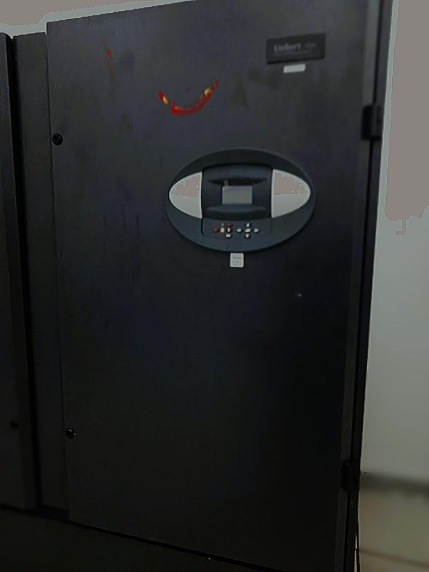

CRAC Cooling Systems — Thermal Management in Data Centers
Hands-on experience working with CRAC (Computer Room Air Conditioning) systems alongside electrical engineering teams and vendor specialists to ensure optimal cooling, airflow management, and thermal stability in a mission-critical data center environment.
Effective cooling is one of the most critical components of data center design. Even the most advanced IT infrastructure can fail without proper temperature and humidity control. This experience provided deep insight into how CRAC systems directly impact uptime, hardware lifespan, energy efficiency, and overall operational reliability.
Learning & Collaboration
I closely collaborated with electrical engineering teams and CRAC vendor specialists to understand both the theoretical and practical aspects of data center cooling. This included on-site walkthroughs, system commissioning, troubleshooting, and real-time performance monitoring.
- Worked alongside electrical engineers during CRAC installation and testing
- Learned vendor-recommended best practices for cooling optimization
- Understood the relationship between power, cooling, and IT load
- Participated in system inspections and preventive maintenance activities
Key Responsibilities & Exposure
Cooling Infrastructure Understanding
- Understanding CRAC unit architecture and operating principles
- Monitoring temperature, humidity, and airflow distribution
- Identifying hot spots and airflow inefficiencies
- Supporting proper rack-level cooling strategies
Operational Best Practices
- Implementation of hot aisle / cold aisle containment concepts
- Coordination between cooling capacity and IT equipment density
- Ensuring redundancy and failover for cooling systems
- Supporting alarms, alerts, and emergency cooling scenarios
Vendor & Electrical Coordination
- Understanding power requirements and electrical safety for CRAC systems
- Coordinating load distribution between cooling and power infrastructure
- Reviewing vendor documentation and operational manuals
Technologies & Concepts
CRAC Units
Data Center Thermal Management
Hot & Cold Aisle Containment
Temperature & Humidity Sensors
Electrical & Cooling Redundancy
Preventive Maintenance Procedures
Impact & Key Takeaways
✔ Gained strong understanding of why cooling is as critical as compute and networking
✔ Learned how improper cooling directly leads to hardware failures and downtime
✔ Improved ability to communicate effectively with facilities and vendor teams
✔ Strengthened holistic understanding of data center operations beyond IT systems
This experience reinforced the importance of integrating IT, electrical, and cooling systems as a single ecosystem. It enhanced my ability to operate, support, and design resilient data center environments where performance, efficiency, and uptime are non-negotiable.
🔗 CRAC for Data Center :
Liebert® Precision Air Conditioning
🔗 Learn More About the Crac vs Crah:
CRAC vs. CRAH unit